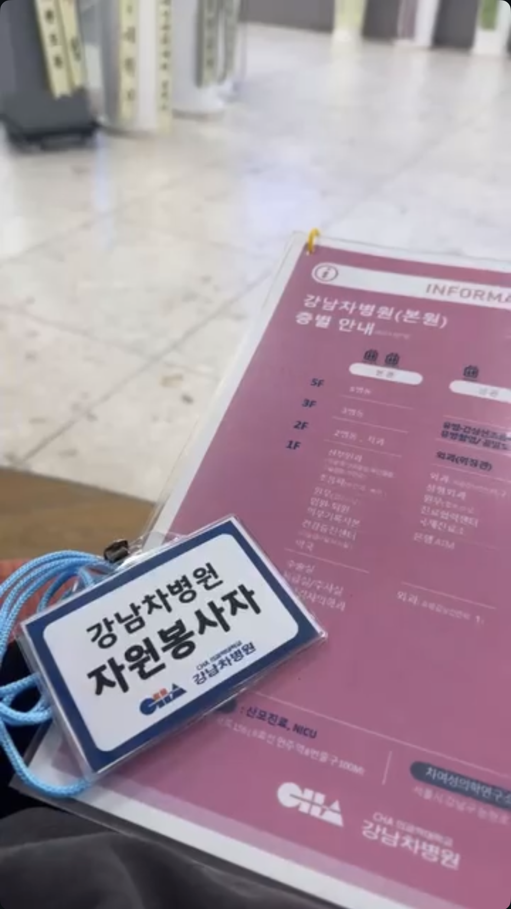
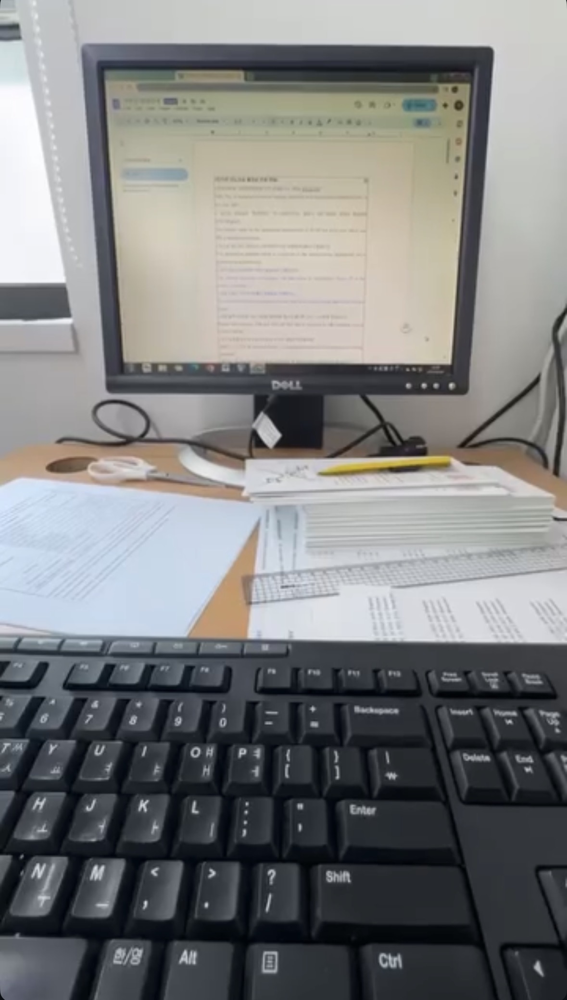

Beyond Language


When I first began volunteering at CHA Hospital, I thought helping patients meant showing them where to go or answering simple questions.
At the International Health Clinic, I soon learned that even a routine hospital visit could feel overwhelming to someone unfamiliar with the language and healthcare system.
I helped international patients with registration, insurance paperwork and directions to their appointments. Sometimes I contacted translators or explained the next steps to families who were unsure what to do.
One day, I met an Indian family who had come to the hospital with their sick child. They were trying to navigate an unfamiliar system while worrying about their child's health.
I stayed with them to help communicate with the hospital staff and understand the paperwork. Even after my scheduled volunteering hours ended, I wanted to make sure they knew what to do next.
Later, I received a message expressing their gratitude. What stayed with me was not the message itself, but the realization that a small amount of extra time could make someone feel less alone.